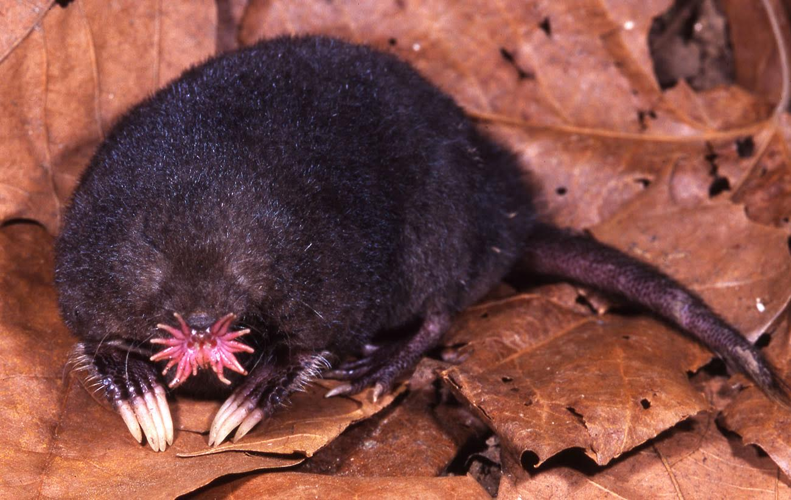
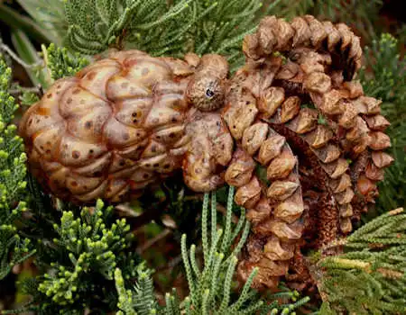
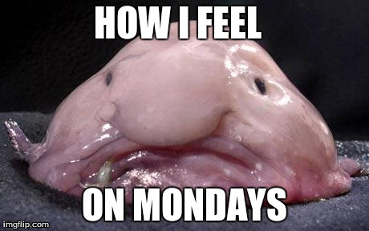
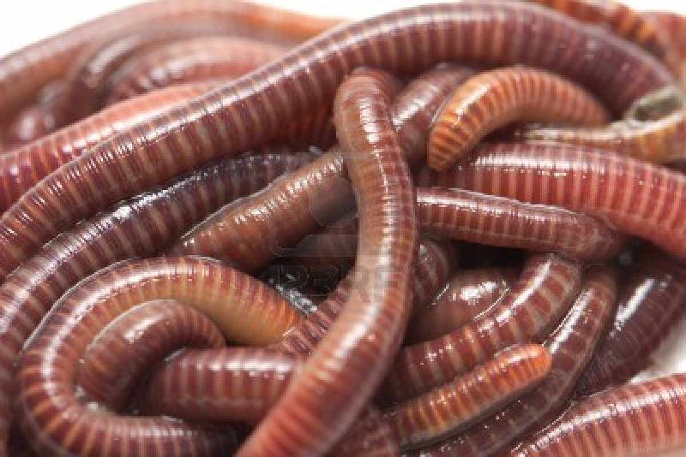
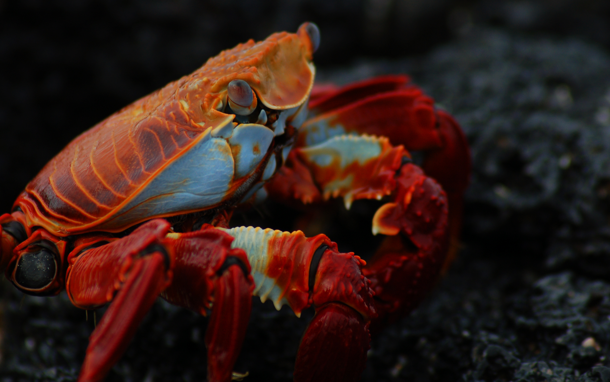

| star nosed mole | pacific nw tree octopus | blobfish | |
|---|---|---|---|
| what does it look like |  |  |  |
| where does it live | North America | Olympic National Forest and nearby rivers, spawning in water | marine waters of the Atlantic, Indian and Pacific Oceans at depths between 100 m and 2800 |
| what does it eat |  | idk |  |
| what r its natural predator | Raptors, including screech, great horned, long-eared, barred, and barn owls, and red-tailed hawks; mammals such as striped skunks, weasels, minks, and foxes; and fish such as the northern pike prey on this mammal | non | no predators (god animal) |
| what is intrestink fact about it | idk | idk | idk |
| whrom withc web site did u find these podatcks | from random sites | from random sites | from random sites |